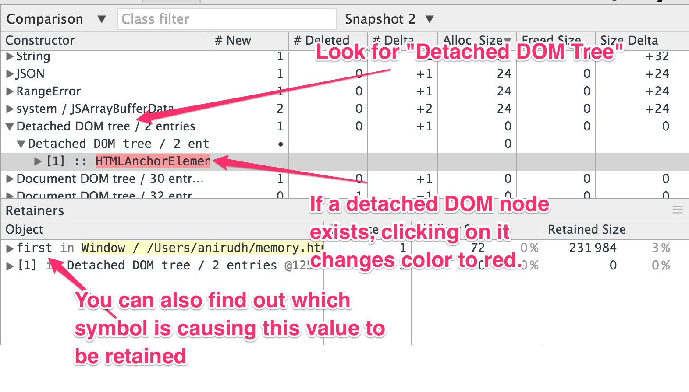

class: center, middle # Memory Leaks in JavaScript ### Anirudh Sanjeev **Product Manager, Helpshift.** --- # What is a memory leak - Your code creates objects/variables. This takes up memory. - The JS runtime (like V8) is smart enough to figure out when you won’t need the variable any more, and will clear it out to save memory. - Sometimes, depending on the way your code works, you may no longer need an object, but the runtime still thinks you do. - Now you’re unintentionally using memory. If this behaviour happens inside a loop/continuously it can be dangerous, and it’s called a “**memory leak**” --- # Memory in JavaScript ```js // Let’s create a hypothetical big object var x = new BigObject (); x.doSomething (); ``` **Runtime**: Is anyone using x after this code runs? No? Then let me clear the memory. --- # Memory in JavaScript ```js var x = new BigObject (); $("#something").click (function () { * x.doSomething (); }) ``` **Runtime**: If a user clicks I will need `x`. I'm going to keep it in memory. If we always need the contents of `x` then this behavior is appropriate. Otherwise it's classified as a **memory leak**. --- class: middle The big issue with memory leaks is that they’re **unwanted but valid behaviour**. It’s like a faulty output and is a **flaw with logic of the code**. A compiler can’t check for it. No tool till date can automatically find memory leaks. However great tools exist to show you where your memory is being used. And it’s **up to you** to see this information and act accordingly. --- ### How much memory is used? #1 ```js function BigObject () { var myArray = []; for(var i - 0; i < 1000; i ++) myArray.push ("World"); // 5 bytes this.doSomething = function () { alert("Hello"); }; } var b1 = new BigObject (); b1.doSomething (); ``` After this code is executed, no memory is used. Here's why: - `myArray` is assigned to but not used later. Cleared. - `b1` is not used after being created. Cleared. --- ### How much memory is used? #2 ```js function BigObject () { var myArray = make_big_array (); // 5 kb this.doSomething = function () { alert("Hello"); }; } var b1 = new BigObject (); *$("#something").click(function () { * b1.doSomething (); *}) ``` After this code is executed, no memory is used. Here's why: - `myArray` is assigned to but not used later. Cleared. - `b1` is used inside a callback and is stored, but the object itself doesn't use memory (negligible for our purposes) --- ### How much memory is used? #3 ```js function BigObject () { var myArray = make_big_array (); // 5 kb this.doSomething = function () { * alert("Hello" + myArray[0]); }; } var b1 = new BigObject (); $("#something").click(function () { b1.doSomething (); }) ``` After this code is executed, **5 KB** used. Here's why: - `doSomething` now needs a copy of `myArray` and that can't be cleared as before. Hence the runtime holds on to it. --- ### How much memory is used? #3 ```js function BigObject () { /* ...snip... */ } var b1 = new BigObject (); $("#something").click(function () { b1.doSomething (); }) $("#something").remove (); ``` After this code is executed, no memory is used. Here's why: - `DOM Node` -> `callback` -> `doSomething` -> `myArray` - If you remove the DOM node the callback loses a reference and likewise everything gets cleared. --- # Key takeaways * If there's a reference to an object, it's in memory. * If an object is used inside a DOM Event callback. * If an object is on a global `window` it definitely is in memory * An object can be cleared **only when all references are cleared** ### And most importantly: * Modern JavaScript runtimes are **incredibly smart** at clearing out un-needed objects and holding on to what is required. * You need to be aware of the rules and what can be kept in memory at all times. --- ### The **retaining tree** ```js var foo = { b1: make_big_array (), // 5 kb b2: make_big_array () // 5 kb }; $("#something").click (function () { * alert (foo.b1[0]); }) ``` This will actually use **10 kb** of memory. Even though the *array* on `foo.b2` is never used, `foo.b2` is still a reference to it. `#something` > `click` > `foo.b1` > `foo` > `foo.b2` This is called the **Retaining Tree** of `foo.b2`. Even if **any** item in the retaining tree, the object should be retained. --- ### Leaking DOM Nodes: Part 1 ```js // The HTML is: // <a id="one">Click Me</a> *// <a id="two">Delete Me</a> var one = document.getElementById ("one"); var two = document.getElementById ("two"); one.addEventListener ('click', function () { * two.remove (); }); ``` When this code runs, and "Click Me" is clicked, the "Delete Me" link is removed. The code is working as expected. However, if you check the memory usage, you'll see that the memory allocated for DOM Node `#two` is still in use. The reason for this is that **a DOM node is also an object** and since there's a reatining reference inside the event listener, the object cannot be cleared. --- ### Leaking DOM Nodes: Part 2 ```js // The HTML is: // <a id="one">Click Me</a> // <a id="two">Delete Me</a> var one = document.getElementById ("one"); one.addEventListener ('click', function () { * var two = document.getElementById ("two"); two.remove (); }); ``` This code accomplishes the same effect. But since `two` is now a local variable, it's cleared when the event listener finishes. The next time event listener runs, `document.getElementById` returns `undefined`. So no memory is leaked in this example. --- class: center, middle ## How to avoid memory leaks ### Some tips from my personal experience --- ### Tip 1: Don't use anonymous function for events #### Instead of: ```js $("#foo").click(function () { alert (this.user.identity.name); }); ``` #### Do: ```js $("#foo").click (some.object.showName, {user: this.user}); ``` ```js some.object.showName = function (event) { alert (event.data.user.identity.name); }; ``` .small-note[**Note**: I wrote this example for jQuery because it's familiar to most and it's concise to explain the point. You can use this approach for any framework or Vanilla JS] --- ### Tip 2: Pass only what you need ```js $("#foo").click (some.object.showName, { * userName: this.user.identity.name }); ``` ```js some.object.showName = function (event) { * alert (event.data.userName); }; ``` Why is this better? Because in earlier case the entire `user` object had to be stored in memory for click handler. Now only the `name` part of the object has to be stored. --- ### Tip #3: Use good judgement JavaScript is a forgiving language, and the memory model and closures are quite powerful [1]. However it also makes it very easy to persist some objects in memory. But it's also important to note **it's ok**. - Be careful, but also be pragmatic. - Preventing leaking few hundred bytes is great, but doesn't make that much of a difference when a jQuery plugin can take upwards of 150kb of memory. - Important: Learn to measure your memory usage, see if it grows, and also profile your code. **You don't improve what you don't measure.** .footnote[ [1] - Yes. I know other funcitonal languages are much more powerful in this regard. ] --- ### Misc Tips - Avoid big complex objects like `a.b.c[4]['xyz'].foo().hi` - Pass only what variables you need in between functions. This is a good habit to have in general. - Don't put things on `this` unless you need it outside the object. Consider making it private. - If you're working with big objects (like a JSON data stream you're processing with d3) be extra careful and profile. - If you're testing for memory, keep a seperate copy of chrome without extensions. Chrome extensions can sometimes interfere if they add items and behavior to the DOM (like AdBlock). --- class: middle ## Some Chrome DevTools Tips Devtools has a **lot** of features to measure memory usage and performance. We can't cover all of them now, you need to take the time to learn then and which to apply for a given situation. But these are some nifty tricks and lesser known features which helped me a lot. --- ### Tip 1: Find leaking objects by comparing snapshots **Situation**: Someone reported that opening and closing a modal leads to increased memory usage. And over time the tab's memory becomes very big and it crashes. Here's what I would do in this case: 1. Open the app and keep it in a state just before opening the modal. 2. Open devtools in the "Profile" tab and **take a Heap Snapshot** called "Snapshot 1". This takes a copy of all objects in memory but it's impossible to go through all of these by hand. 3. Open the modal and close the modal again. Some memory has now leaked. 4. I click on the button to take a heap snapshot again. This is saved as "Snapshot 2" 5. In my second Heap Snapshot, I select "Summary" and change it to "Comparison", to **diff the memory** before and after the memory leak happened. --- ### What does that look like? --- ### Tip 2: Learn to use the retaining tree display <img src="images/devtools_retaining_tree.png" width="100%" /> --- ### Tip 3: Look for "Detached DOM Nodes"  --- ### Misc Tips for Dev Tools - The memory display does not consolidate total memory for an object. - You can filter by classname. This way if you suspect some object is leaking, you can search for it directly. - "Record Heap Allocations" is an advanced tool which records memory allocations. You can slice a segment and check for leaks. This is more complex to use but more powerful. - "Timeline" view lets you view your memory usage as a graph while you're using the app so you can "guess" operations which are leaking memory. --- class: middle ### Most important dev tools tip All the stuff I talked about, and much more is there right in your browser. Codeschool offers a fantastic thorough devtools course which includes memory profiling. Google's official documentation is great too! If you're doing any kind of development involving the browser, a strong knowledge of devtools will be a huge advantage. --- class: middle ### Thank you. See the slides at [bit.ly/jsfoo_memory](http://bit.ly/jsfoo_memory)